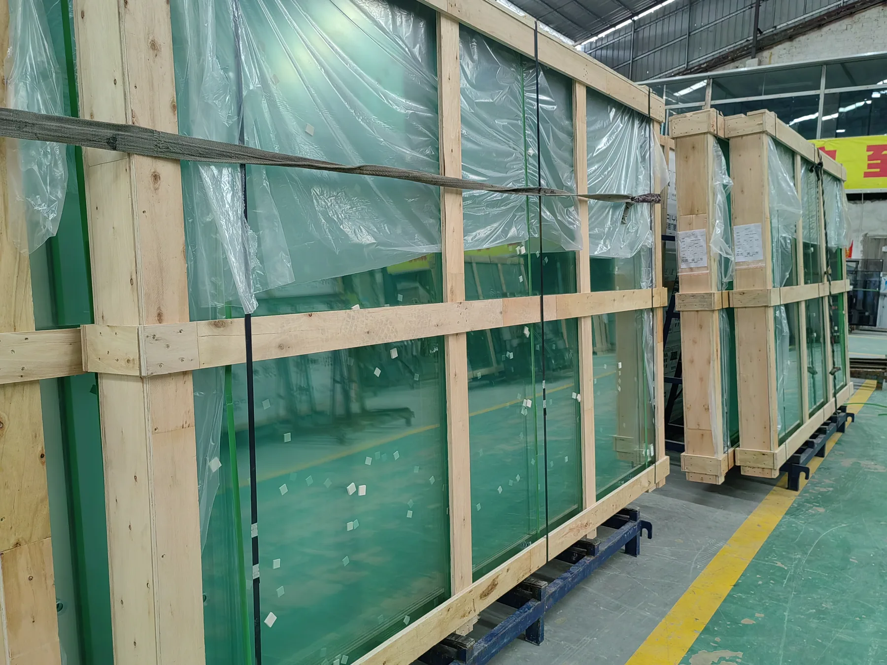

Why Buyers Are Asking This Question
Current padel-owner discussions regularly compare factory-direct courts from China, Turkey, Mexico and Europe. The recurring concerns are not simply price: buyers ask whether apparently similar specifications translate into the same corrosion resistance, glass stability, turf installation, wind performance and after-sales support.
Those discussions are useful as a signal of what buyers worry about, but individual experiences are anecdotal. A purchasing decision should be based on the actual supplier, the actual court model and the requirements of the project site.
A Chinese factory can manufacture a low-cost court or a high-specification court. A European brand can also source components internationally. Compare the supplied evidence and project responsibilities, not the flag on the quotation.
Why One Padel Court Can Be Much Cheaper Than Another
| Price difference | What may actually be different |
|---|---|
| Steel structure | Section size, wall thickness, steel weight, reinforcement and fabrication tolerances |
| Corrosion protection | Pre-galvanized, hot-dip galvanized, zinc-rich treatment, coating system and process control |
| Glass | Thickness, tempering documentation, edge quality, drilling accuracy, packing and fixing system |
| Turf | Yarn construction, pile height, density, backing, infill requirement and installation workmanship |
| Lighting | Fixture output, optics, driver quality, IP rating, brackets, cabling scope and photometric design |
| Engineering | Generic shop drawing versus project-specific wind, anchor, foundation or roof coordination |
| Packing | Basic container loading versus export crates, glass protection, labeling and replacement strategy |
| Commercial scope | EXW equipment only versus freight, installation support, warranty service and local coordination |
1. Compare Steel by Section and Wall Thickness, Not by Photograph
Two panoramic courts can look nearly identical in a rendering while containing materially different steel quantities. Request the steel grade, section dimensions and wall thicknesses for the main posts, beams, mesh frames and light supports. For exposed sites, ask which components change in the wind-rated configuration.
If a supplier only states “heavy-duty steel” without model-specific sections, the quotation is not yet comparable. Use the high-wind padel court guide for exposed or coastal locations.
2. Ask What “Galvanized” Actually Means
Rust concerns appear frequently in owner discussions because corrosion performance depends on the complete protection system and environment. “Galvanized steel” can describe different materials and processes. Ask whether the quoted components are hot-dip galvanized after fabrication, made from pre-galvanized tube, zinc-treated, powder coated, or a combination.
For coastal or humid projects, define the exposure before the supplier recommends the coating system. Welding, cut edges, fasteners, drainage traps and installation damage can matter as much as the headline coating description.
3. Treat the Glass as a Safety-Critical System
Do not stop at “10 mm” or “12 mm tempered glass.” Verify the applicable safety-glass documentation, panel dimensions, edge finish, hole pattern, fixing hardware, packing and installation clearances. SPORTENVO panoramic systems use 12 mm tempered glass in their specified configuration, but the correct comparison is the complete approved court design.
Read the detailed padel court glass buyer guide for EN 12150, edge damage, fixings and handover checks.
4. Turf Quality Includes Installation
A 12 mm turf specification does not guarantee the same playing result across suppliers. Compare yarn type, Dtex, density, backing, silica-sand requirement, drainage and the installation process. Recent community discussions also highlight that poor laying and infill distribution can make a decent material perform badly.
Use the padel court turf guide to compare pile height, Dtex, sand and maintenance.
5. Wind Resistance Must Match the Actual Site
A generic claim such as “strong wind resistance” is not enough for an exposed commercial site. The design basis should identify the relevant wind condition, structural configuration, anchoring and foundation reactions. A standard indoor court should not be assumed to have the same structural requirement as a rooftop or coastal installation.
Ask who is responsible for project-specific structural verification and which documents the local engineer will receive.
6. Foundation and Drainage Can Erase an Equipment Saving
Reddit discussions about direct importing often focus on the equipment invoice, while experienced operators point out that local concrete, drainage and installation can represent a major part of the project. A cheaper court package can still become an expensive project if the foundation has to be rebuilt or if drainage was not coordinated before installation.
Compare the supplier's interface drawings with the foundation guide and drainage guide before construction starts.
7. Normalize Freight, Customs and Site Delivery
An EXW or FOB factory price is not directly comparable with a delivered quotation. Add the same logistics boundary to every supplier: export packing, ocean or road freight, insurance if used, destination charges, customs and duty, inland transport, unloading, storage and lifting equipment.
The padel court shipping guide explains the export and destination handoff in more detail.
8. Decide Who Will Install the Court Before You Order
Some factory-direct projects use a trained local contractor with supplier drawings and remote technical support. Others include an on-site supervisor or specialist team. Neither model is automatically better, but the responsibility must be clear before shipment.
Ask who checks the slab, sets out anchors, erects steel, handles glass, installs turf, connects lighting and signs off the final court. Read the installation guide before assigning local labor.
9. Compare Warranty by Component and Remedy
A single headline such as “5-year warranty” hides too much. Steel coating, structural fabrication, glass, turf, lighting and accessories can have different coverage. Ask what event is covered, what is excluded, who pays freight for a replacement component, what evidence is required and how long replacement parts remain available.
10. Verify the Supplier, Not the Country
A useful supplier check includes business identity, factory capability, model-specific drawings, current project references, quality-control process, packing method, technical communication and after-sales procedure. Where practical, request live factory or project video, third-party documentation, samples of relevant materials and references from similar climates or project types.
The full process is in How to Choose a Padel Court Manufacturer.
Factory Direct vs Distributor: What Changes?
| Route | Potential advantage | Buyer responsibility to check |
|---|---|---|
| Factory direct | Direct technical communication and potentially lower equipment margin | Import logistics, local code review, installation coordination and after-sales process |
| Local distributor | Local contract, communication and potentially integrated installation support | Actual manufacturer, specification transparency, markup scope and warranty responsibility |
| Turnkey contractor | Single project interface for more of the local works | Subcontracted court brand, technical specification, exclusions and final acceptance scope |
The right route depends on the buyer's team and the project. A developer with an experienced local engineer and installer may be comfortable buying factory-direct. A first-time club owner may value a local party that accepts more coordination responsibility.
A 15-Point Checklist Before Paying a Deposit
- Exact court model and approved configuration.
- Steel grade, sections and wall thicknesses.
- Corrosion-protection process and finish.
- Tempered-glass thickness, standard and hardware.
- Turf datasheet, infill and installation requirement.
- Lighting fixtures, quantity, power, IP rating and mounting.
- Structural design basis for the project exposure.
- Foundation interface and anchor requirements.
- Drainage responsibility.
- Export packing and glass protection.
- Incoterm, port or named place and freight boundary.
- Installation documentation and technical-support scope.
- Component-level warranty and replacement procedure.
- Relevant completed-project evidence.
- Written exclusions: local civil, electrical, permits, taxes, unloading and labor.
For a ready-to-use comparison sheet, open the SPORTENVO Padel Court RFQ Checklist.
What a Low Price Can Legitimately Mean
Not every low quotation is a shortcut. A price may be lower because the supplier is factory-direct, uses standardized configurations, has lower manufacturing or labor cost, ships multiple courts efficiently, or excludes services that another supplier includes. Those can all be legitimate reasons.
The risk begins when the buyer cannot explain the price difference. If two quotations are thousands apart, identify where the specification, service or project boundary changes before deciding which offer is genuinely less expensive.
Community Discussions That Informed This Guide
Recent Reddit threads include buyers comparing low-cost courts from China and Mexico, asking about Chinese indoor courts, discussing direct manufacturer versus supplier routes, and comparing court brands with similar headline specifications. These are community anecdotes rather than engineering evidence, but they highlight recurring procurement questions worth answering systematically.
- Are cheap padel courts from China or Mexico actually worth it?
- Building a Padel Court — discussion about courts shipped from China
- Direct manufacturer vs supplier discussion
- Padel court manufacturer comparison
Have two or three padel court quotations?
Send the specifications, project country, site type and delivery boundary. Normalize the court, foundation, logistics and installation scope before comparing the headline price.
Request Project Review →Cheap Padel Court FAQ
Are cheap padel courts from China worth buying?
They can be, but “from China” is not a useful quality category. Verify the actual manufacturer, specification, engineering, documentation, packing, installation and warranty for the exact court model.
Why can two padel court quotations have very different prices?
They may use different steel, coating, glass, turf or lighting, or they may include different freight, installation, foundation, roof and warranty scope. Compare the same technical and commercial boundary.
What should I check before ordering factory direct?
Check business identity, model drawings, steel and coating, glass documentation, turf and lighting data, project engineering, packing, shipping, installation guidance, warranty and references.
Is factory direct always cheaper?
Not necessarily after the whole project is counted. Factory-direct purchasing may reduce distribution margin but can transfer logistics, installation and coordination responsibilities to the buyer.
What is the biggest hidden cost?
There is no single answer. Common omissions are foundation, drainage, freight, customs, unloading, installation labor, electrical work, permits, engineering and weather protection.